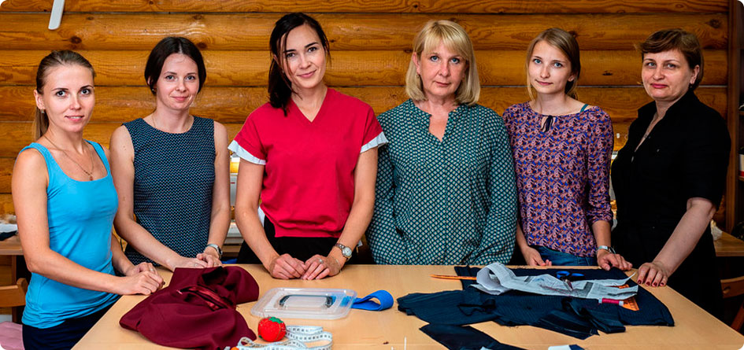
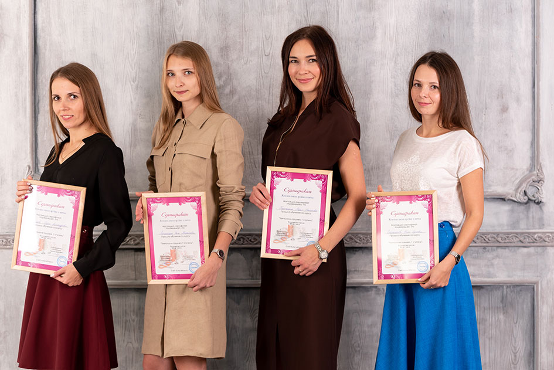
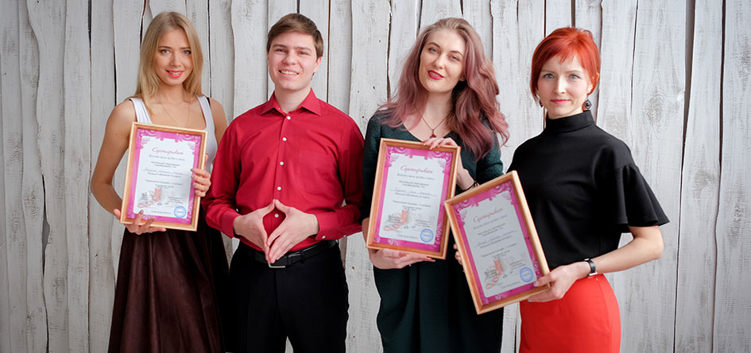

Фотогалерея
Погрузитесь в атмосферу Женской школы кройки и шитья
вместе с теми ,кто уже прошел наши курсы





Наша команда
Саласенко Тимур Юрьевич
директор и основатель школы
Шабалина Галина Павловна
преподаватель
Крюкова Валентина Андреевна
преподаватель
Захарова Нина Валентиновна
преподаватель
За год в Женской школе кройки
и шитья отшивается более 450
эксклюзивных изделий и всё
благодаря им — нашим
преподавателям. Каждая из них
обладает многолетним опытом
портновского дела и обучения.
Они знают, как пройти через
кризис «У меня ничего не
получается» и объяснить
сложнейшие элементы при пошиве
одежды.
Поэтому на курсах царит
дружелюбная и вдохновляющая
атмосфера,в которой не страшно
задать вопросы, поделиться
возникшими трудностями и вместе
преодолеть стежок за стежком.
и шитья отшивается более 450
эксклюзивных изделий и всё
благодаря им — нашим
преподавателям. Каждая из них
обладает многолетним опытом
портновского дела и обучения.
Они знают, как пройти через
кризис «У меня ничего не
получается» и объяснить
сложнейшие элементы при пошиве
одежды.
Поэтому на курсах царит
дружелюбная и вдохновляющая
атмосфера,в которой не страшно
задать вопросы, поделиться
возникшими трудностями и вместе
преодолеть стежок за стежком.


Саласенко Тимур Юрьевич
директор и основатель школы
«Я открыл школу в августе 2016 года. Собрал команду
высококлассных преподавателей, лучших мастеров своего дела.
Под моим управлением в школе каждый год отшивается более 450
уникальных изделий. Около четырех раз в год я провожу глобальные
студийные фотосессии, на которых снимаем наших учениц
в их сшитых нарядах.
Я лично провожу пробные уроки, запускаю новые группы
и обязательно после прохождения курса я беру обратную связь
у каждой ученицы. Узнаю, как прошло обучение, какую бы оценку
они поставили нашей школе, что можно улучшить и добавить в курс.
К преподавательскому составу выдвигаю довольно много критериев,
но самое главное — наличие специального образования в портновской
отрасли, опыт индивидуального пошива от 20 лет, обязательный опыт
преподавания и подготовки портных в специализированных учебных
заведениях. Поэтому я спокоен за наполнение курса и компетентность
каждого члена моей команды».
высококлассных преподавателей, лучших мастеров своего дела.
Под моим управлением в школе каждый год отшивается более 450
уникальных изделий. Около четырех раз в год я провожу глобальные
студийные фотосессии, на которых снимаем наших учениц
в их сшитых нарядах.
Я лично провожу пробные уроки, запускаю новые группы
и обязательно после прохождения курса я беру обратную связь
у каждой ученицы. Узнаю, как прошло обучение, какую бы оценку
они поставили нашей школе, что можно улучшить и добавить в курс.
К преподавательскому составу выдвигаю довольно много критериев,
но самое главное — наличие специального образования в портновской
отрасли, опыт индивидуального пошива от 20 лет, обязательный опыт
преподавания и подготовки портных в специализированных учебных
заведениях. Поэтому я спокоен за наполнение курса и компетентность
каждого члена моей команды».
Не хочу переплачивать
за вещи из магазинов
Стоимость вещей из масс-маркета
складывается из человеческого труда,
материалов и наценки магазинов.
Когда вы шьете сами, экономите
до 50% средств. При этом сами
выбираете ткань по вкусу
и эксклюзивный фасон.
Зачем подстраиваться под
магазины, когда можно
сшить самой?